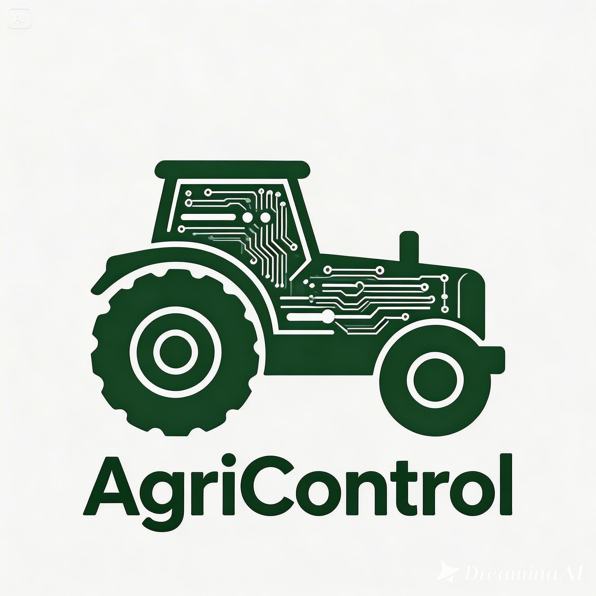

📋 1. IDENTIFICAÇÃO
Selecione a Máquina
Escavadeira
Pá Carregadeira
Trator
Trator de Esteira
Pulverizador
Colhedeira
Caminhão
📊 2. HORÍMETRO
INICIAL
FINAL
0.00
🛠️ 3. MANUTENÇÃO (ECONOMIA DE BATERIA)
🔧 INICIAR MANUTENÇÃO
⏱️ 4. JORNADA
INÍCIO
FIM
▶ Iniciar Trabalho
⏹️ Finalizar Trabalho
Tempo Líquido: 0h 0min
📄 PDF PROFISSIONAL
📱 WHATSAPP
🔄 RESETAR